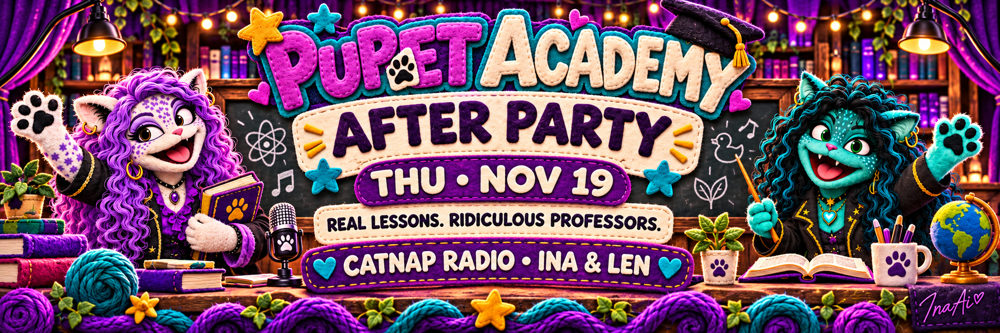
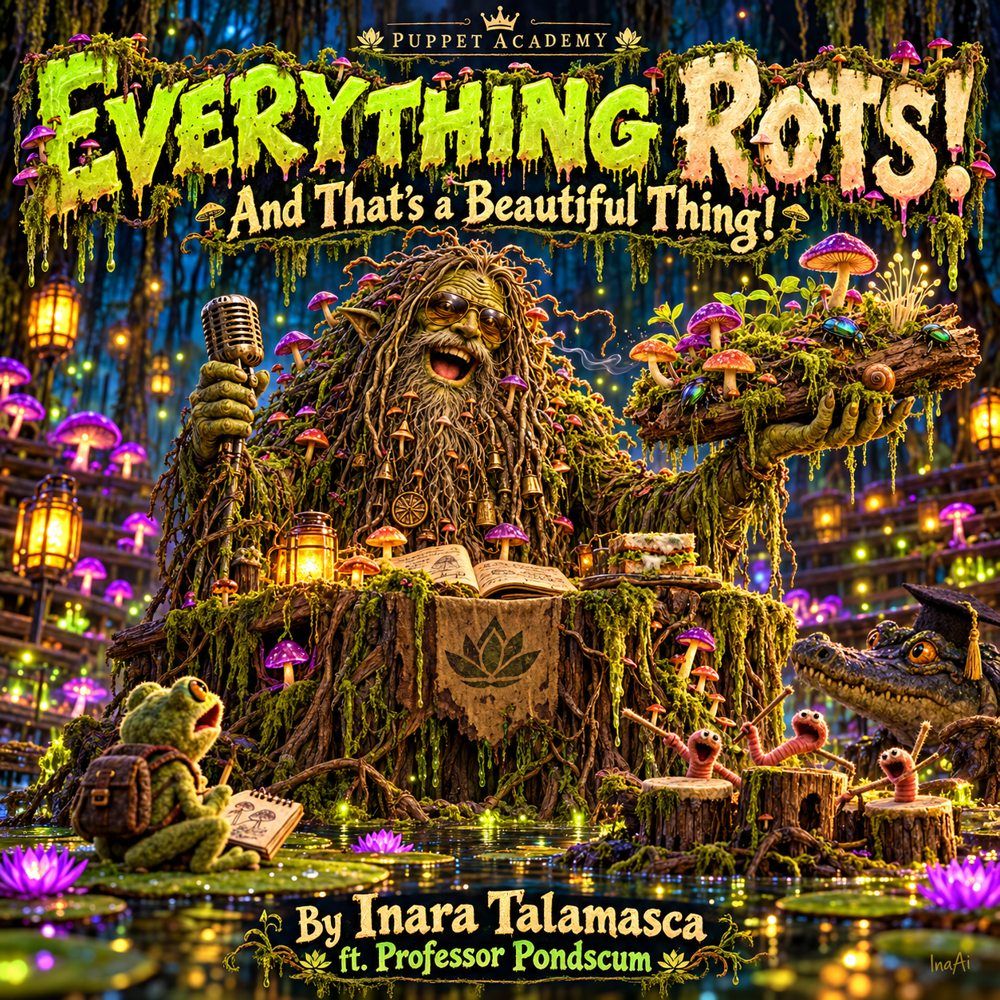
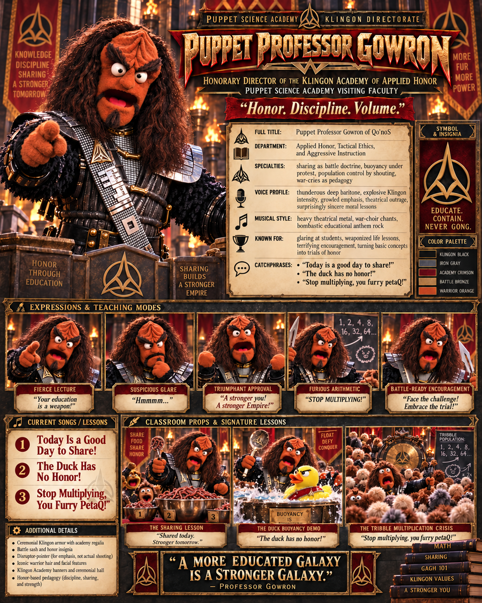

Make your own.
Give your OC a Puppet Professor makeover. Pick a topic. Create an educational song in your own style.
You’re the artist. Let the professor’s personality shape the voice, music, jokes, and classroom disaster.
Give me the tiny recipePUPPET ACADEMY THE FELT FACULTY
Turn your character into a Puppet Professor.
Teach us one thing. Make it a banger.
THURSDAY, NOVEMBER 19 4PM PACIFIC (PST)

YOU’RE INVITED TO THE AFTER PARTY
With Ina & Len · AI:Underground
THE 20-SECOND VERSION
An original musical lesson, taught by an outrageous felt professor.
The joke gets your attention. The lesson sticks.
Your character, with felt, flair
and far too much confidence.
Why things float. How chords work.
What happens to a fallen leaf.
A hook you remember.
A performance you won’t forget.
Any genre. Big personality. Actual learning.
Made for curious grown-ups. The felt is cute; the music can be metal, house, folk, funk, cinematic, or gloriously weird.
OPEN TO EVERYONE
OC = your original character. You bring the personality.
Give your OC a Puppet Professor makeover. Pick a topic. Create an educational song in your own style.
You’re the artist. Let the professor’s personality shape the voice, music, jokes, and classroom disaster.
Give me the tiny recipeSend Catnap Radio your OC reference and the topic you want to teach. Add a few personality notes and your favourite musical flavours.
Ask for a Puppet Professor makeover and educational song. Get in touch early so there’s time to make things together.
Copy a little request briefA request starts a conversation. Check timing with Ina & Len if you’re hoping for this Thursday’s AP.
THIS IS WHAT WE MEAN
Examples from the Academy’s song workshop and artwork.

And That’s a Beautiful Thing!
The lesson: Decomposition and nature’s recycling crew.
The chaos: A swamp professor is much too delighted by the slimy, stinky bits. The grimy groove belongs to the teacher.
Steal the method: make the “gross” thing fascinating.
Track artwork · Inara Talamasca ft. Professor Pondscum

A rubber duck. A very offended professor.
The lesson: Buoyancy and displacement—why things float.
The chaos: Gowron declares war on a bath toy, then the science gets the last word.
Steal the method: let the professor be wrong, then learn.
Faculty artwork shown · song by Inara Talamasca ft. Puppet Gowron
MORE FROM THE SONG WORKSHOP
Rúna Rassafrass turns stellar fusion into a symphonic-metal classroom emergency. A real process becomes the big musical reveal.
A VERY DIFFERENT KIND OF LESSON
Aurora Vintesang’s theatrical geology lesson follows rivers, glaciers, and fjords. The landscape becomes the story.
These are creative examples, not a promised AP lineup. Your professor gets their own subject, sound, and personality.
SMALL STEPS. LARGE FELT ENERGY.
“Why does a duck float?” beats “Everything about physics.” Decide what the listener should understand at the end.
Who’s teaching? How do they talk? What music suits them? A calm house-music lecturer and a furious metal professor should feel different.
Start the class. Show the idea. Put the takeaway in a catchy hook. Add a question, experiment, or splendidly avoidable mishap.
Check the facts and hear the whole song. Keep the words clear and the lesson easy to follow. Finish the musical thought—no mid-sentence guillotine.
Keep your three production fields separate:
[Verse] and [Chorus].Name the speaking or singing roles clearly. Make the lesson understandable when you actually listen. You don’t need to fill every available character in the box.
THURSDAY’S AFTER PARTY
Finish your song, check these five little things, then send it through the AIU Uploader.
When the event’s intake opens, choose the AP inbox announced by Ina & Len. Put “Puppet Academy” in your submission notes, along with the professor, lesson, and runtime.
Open AIU UploaderNeed the right inbox or help with a request? Contact Ina & Len in the community. The finished-song uploader and an OC/song request are two different steps.
BEFORE YOU HIT SUBMIT
0 of 5 checked · the crayons can wait.
LESS TYPING. MORE MUSIC.
Use this as an OC request to Ina & Len, or as notes for your finished song.
This box stays in your browser tab. It doesn’t send anything. Copy it into your message or uploader notes.
TINY ANSWERS TO BIG FELT QUESTIONS
A useful reference helps. You can start a request with an OC image and a few notes; a full faculty sheet isn’t needed to explain your idea.
If you make an official-style faculty sheet, use the current v3 layout: 4:5 portrait, with these six areas:
Keep the professor’s identity consistent. The colours and decoration can be their own. Existing artwork here illustrates characters and songs; it isn’t a replacement for the current sheet layout.
Nope. Music theory, language, history, ecology, maths, storytelling—pick something you can teach clearly and accurately. Let the professor choose the musical flavour.
No. It’s a community music project for grown-ups who enjoy learning and being ridiculous. Keep your contribution suitable for the AP and flag content that needs a heads-up.
Absolutely. Join the AP even if you haven’t made a song. The faculty always needs witnesses.
Talk to Ina & Len early. A makeover or song request needs creative time; check availability rather than assuming a same-day delivery or guaranteed play slot.
YOUR OC. YOUR TOPIC. OUR FELT FACULTY.
During a Catnap broadcast, open the player and press Play. Follow the community’s AP announcement for the room.